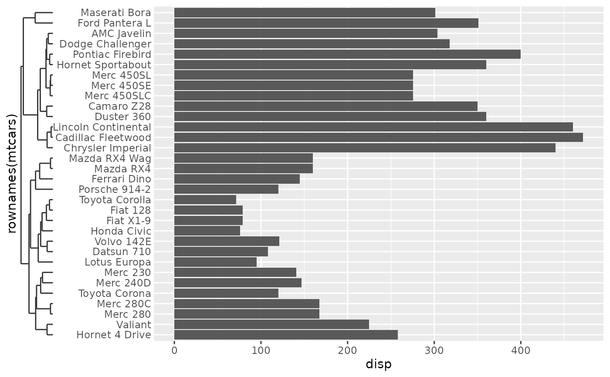

This axis is a speciality axis for discrete data that has been hierarchically clustered. Please be aware that the guide cannot affect the scale limits, which should be set appropriately. This guide will give misleading results when this step is skipped!
Arguments
- key
A segment key specification. See more information in the linked topic. Alternatively, an object of class
<hclust>that automatically invokeskey_dendro().- title
A
<character[1]>or<expression[1]>indicating the title of the guide. IfNULL, the title is not shown. The default,waiver(), takes the name of the scale object or the name specified inlabs()as the title.- theme
A
<theme>object to style the guide individually or differently from the plot's theme settings. Thethemeargument in the guide overrides and is combined with the plot's theme.- space
Either a
<unit>or<rel>object of length 1 determining the space allocated in the orthogonal direction. When thespaceargument is of class<rel>(default) the base size is taken from the tick length theme setting.- vanish
Only relevant when the guide is used in the secondary theta position: a
<logical[1]>on whether the continue to draw the segments until they meed in the center (TRUE) or strictly observe thespacesetting (FALSE).- n.dodge
An positive
<integer[1]>setting the number of layers text labels can occupy to avoid overlapping labels.- angle
A specification for the text angle. Compared to setting the
angleargument inelement_text(), this argument uses some heuristics to automatically pick thehjustandvjustthat you probably want. Can be one of the following:NULLto take angles and justification settings directly from the theme.waiver()to allow reasonable defaults in special cases.A
<numeric[1]>between -360 and 360 for the text angle in degrees.
- check.overlap
A
<logical[1]>indicating whether to check for and omit overlapping text. IfTRUE, first, last and middle labels are recursively prioritised in that order. IfFALSE, all labels are drawn.- ticks, axis_line
Guides to use as ticks or axis lines. Defaults to drawing no ticks or axis lines. Can be specified as one of the following:
A
<Guide>class object.A
<function>that returns a<Guide>class object.A
<character[1]>naming such a function, without theguide_orprimitive_prefix.
- order
A positive
<integer[1]>that specifies the order of this guide among multiple guides. This controls in which order guides are merged if there are multiple guides for the same position. If0(default), the order is determined by a hashing indicative settings of a guide.- position
A
<character[1]>giving the location of the guide. Can be one of"top","bottom","left"or"right".
See also
Other standalone guides:
guide_axis_base(),
guide_axis_nested(),
guide_circles(),
guide_colbar(),
guide_colring(),
guide_colsteps(),
guide_legend_base(),
guide_legend_cross(),
guide_legend_group()
Examples
# Hierarchically cluster data
clust <- hclust(dist(scale(mtcars)), "ave")
# Using the guide along with appropriate limits
p <- ggplot(mtcars, aes(disp, rownames(mtcars))) +
geom_col() +
scale_y_discrete(limits = clust$labels[clust$order])
# Standard usage
p + guides(y = guide_axis_dendro(clust))

# Adding ticks and axis line
p + guides(y = guide_axis_dendro(clust, ticks = "ticks", axis_line = "line")) +
theme(axis.line = element_line())
# Controlling space allocated to dendrogram
p + guides(y = guide_axis_dendro(clust, space = unit(4, "cm"))) +
theme(axis.ticks.y.left = element_line("red"))
# If want just the dendrograme, use `primitive_segments()`
p + guides(y = primitive_segments(clust), y.sec = "axis")